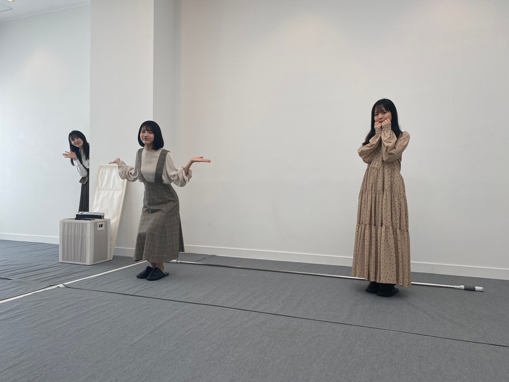
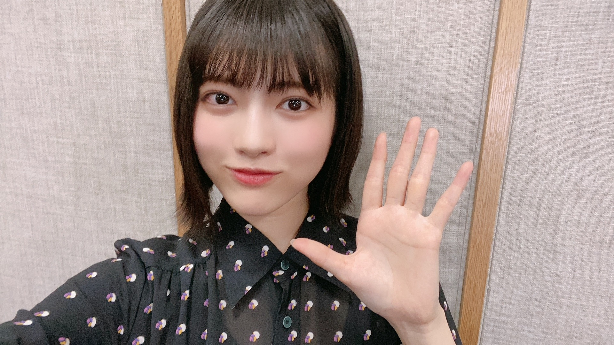

2020/1105Thuお疲れ様です。林瑠奈です。
本日もお疲れ様です。
乃木坂46、4期生の林瑠奈です。
神奈川県出身高校2年生17歳
華咲くセブンのティーンの林瑠奈です。
負けるなしょげるな林瑠奈、今日も1日頑張るな
(ピンポーン)
39周目となりました、ブログリレー。
『39』を聴きながら今日は眠りにつこうと思います。
...........................................................................
書こうと思っていたこと、新たに書きたいと思っていることが沢山あってまとまらないので、今日は少しだけ書きます。
11月4日発売のananさんに乃木坂46全員で、掲載して頂いています。
新4期生5人での座談会もさせて頂きまして、みんなの流行を知れたので、今後の付き合いに活かしていこうと思います。
新たな知識を沢山得られたりと、とても貴重な経験をさせていただきました。
本当にありがとうございます。

みゆちゃんりかたん可愛いね
...........................................................................
10月31日。
さやたん、お誕生日おめでとう！！
先日ののぎおびのアフタートークでも話しました通り、さやたんがブームです。
ブームとか言うのはどうかとは思うのですが、前々から仲良くしたいと思っていたところ、ここ1ヶ月くらいでだいぶ距離を縮められたのではないかと、個人的には思っています。
さやたん好きです！これからもよろしくお願いします！！
11月1日。
渡辺みり愛さん、お誕生日おめでとうございます！！
全体リハーサルのときも、新4期生に対して『わかんないとこあったらすぐ聞きに来なね』と言ってくださって感動しました。
みり愛さんのダンスが大好きです。
わたしの母もみり愛さんのダンスが大好きです。
これから頼らせていただくことがあるかと思いますが、よろしくお願いします！
...........................................................................
もう11月です。
"もう"と言ってしまうということは、時の流れが早いのではなくて、自分が時間についていけていないのだなと感じさせられます。
季節の移り変わりは何で感じますか。
いつもの景色がいつもじゃなくなったとき
洗濯物を入れるときの匂いが変わったとき
聞こえてくる声の数が減ったとき
沢山ありますよね。
でも1番思うのは誕生日かな、と。
日付って数字だからわかりやすいのは当たり前なんですけど、
もうこの人の誕生日か、とか
そんな風にしてわたしは季節を感じています。
誰かを祝える瞬間って素敵ですよね。
本日お誕生日の方、おめでとうございます。
11月にお誕生日の方も重ねておめでとうございます。
...........................................................................
明日はミュウちゃんです。
みゆちゃんの髪の毛ってめっちゃ良い香りするよね
P.S.先日ののぎおび、ありがとうございました。
今日は回鍋肉を食べます。

アディオス
かしこ
2020/11/05 17:54
コメント(166)
自分が時間についていけていない、胸にささりました。
確かに全てを周りの状況と香水のせいにしちゃいけませんね
暗めの服、外ハネ、表情、良きです
確かに全てを周りの状況と香水のせいにしちゃいけませんね
暗めの服、外ハネ、表情、良きです
質問
冬は何色だと思いますか？
冬は何色だと思いますか？
瑠奈ちゃん、ブログありがとう！
先日ののぎおび、ちゃんと見ましたよー。白石さん卒業コンサートの楽屋裏の話が聞けてとても面白く有意義な30分間でした。4期生同士のチームワークにもほっこりしました。これからも頑張ってください。
来週からノギザカスキッツACT2始まるね。楽しみにしてます。
それと、anan買いました。新4期生の座談会楽しかったです。瑠奈ちゃんの写真もきれい。
寒くなってきたので体調に気を付けてね。
先日ののぎおび、ちゃんと見ましたよー。白石さん卒業コンサートの楽屋裏の話が聞けてとても面白く有意義な30分間でした。4期生同士のチームワークにもほっこりしました。これからも頑張ってください。
来週からノギザカスキッツACT2始まるね。楽しみにしてます。
それと、anan買いました。新4期生の座談会楽しかったです。瑠奈ちゃんの写真もきれい。
寒くなってきたので体調に気を付けてね。
ブログ更新ありがとう！！
のぎおびもいい感じで、あっという間でした！！
みゆちゃん、りかたんも可愛いけど、瑠奈ちゃんも
負けてないよう！！笑
今日はこの辺でチャオ(｀□´)
のぎおびもいい感じで、あっという間でした！！
みゆちゃん、りかたんも可愛いけど、瑠奈ちゃんも
負けてないよう！！笑
今日はこの辺でチャオ(｀□´)
すまねぇ、回鍋肉食べられなかった、、、
ŧ‹”ŧ‹”(●´ㅂ`●)ŧ‹”ŧ‹”麻婆豆腐食っちゃってたから〜
ŧ‹”ŧ‹”(●´ㅂ`●)ŧ‹”ŧ‹”麻婆豆腐食っちゃってたから〜
ブログありがとう！
an・an読んでみます！！
11月ですね
寒くなってきたので体調管理気をつけましょ！！
an・an読んでみます！！
11月ですね
寒くなってきたので体調管理気をつけましょ！！
るなぴ
（ぴんぽーん）
snsでみんな言ってたよ。
「林瑠奈はこっち側の人間だ」
ってね。
ファンの気持ちをよーくわかってるってことみたいね。
アディオ。
（ぴんぽーん）
snsでみんな言ってたよ。
「林瑠奈はこっち側の人間だ」
ってね。
ファンの気持ちをよーくわかってるってことみたいね。
アディオ。
林ってイケメンだよね？
あと２ヵ月くらいで今年も終わるんだね。。
あと２ヵ月くらいで今年も終わるんだね。。
ブログありがとー！
an・anよんだ！！
ホントもう11月だよね。人と居られる、話せる、会えるってことがどれだけ幸せかわからせられる年ですね今年は。いつもの当たり前がそうじゃなくなる、人の進化の過程では必要なのかな。。。来年は全国ツアーできるといいね！楽しみに待ってる！
質問です。
朝がすごく早いときはどうやって起きる気合いを入れますか？目覚ましで起きても布団からでられないんです。
気が向いたら教えてくださーーーい！！
あでゅ。
ばいばいびーーーーん。
窓のけつろが室温と気温の違いをけつろんしてますよ。ﾎﾎﾎ
an・anよんだ！！
ホントもう11月だよね。人と居られる、話せる、会えるってことがどれだけ幸せかわからせられる年ですね今年は。いつもの当たり前がそうじゃなくなる、人の進化の過程では必要なのかな。。。来年は全国ツアーできるといいね！楽しみに待ってる！
質問です。
朝がすごく早いときはどうやって起きる気合いを入れますか？目覚ましで起きても布団からでられないんです。
気が向いたら教えてくださーーーい！！
あでゅ。
ばいばいびーーーーん。
窓のけつろが室温と気温の違いをけつろんしてますよ。ﾎﾎﾎ
るなちゃん、ブログ更新ありがとう‼
ananまだ買えてない．．．。 買うね！
さやたんって呼んでるの意外ｗｗ
私回鍋肉食べたことない．．
愛媛県在住 中３女子 音より
追伸：今日も一日お疲れ様！
ananまだ買えてない．．．。 買うね！
さやたんって呼んでるの意外ｗｗ
私回鍋肉食べたことない．．
愛媛県在住 中３女子 音より
追伸：今日も一日お疲れ様！
ブログ更新ありがとう。可愛い写真も。ありがとう。またバッチリコメ残すね。ナオッチ
更新お疲れ様！
回鍋肉今日食べた！笑
乃木坂スキッツ次も楽しみにしてます〜！
回鍋肉今日食べた！笑
乃木坂スキッツ次も楽しみにしてます〜！
のぎおび楽しかったです。
あれだけ回鍋肉回鍋肉言われると食べたくなりました、近いうちに食べたいと思います！
今年も残り２ヶ月、しっかり生きないとですね。
あれだけ回鍋肉回鍋肉言われると食べたくなりました、近いうちに食べたいと思います！
今年も残り２ヶ月、しっかり生きないとですね。
ブログ更新おおきに！
anan掲載おめでとうございます!!
そして乃木フェスにやっと登場しますね！おめでとう！ガチャで当たりますように
時の流れは早いですよね...坂道研修生ツアーからもう1年やもん。
ただこの1年は特に、BRODY掲載とかから始まり日々の環境がガラッと変化があったからそう感じそうですね。
直接、お誕生日のお祝いが言える環境にもなったのもありそうです
...................................................
質問です
・持ってるお洋服で多いのは何色のお洋服ですか？(黒色が多そうですが)
...................................................
ブログに素敵な写真をありがとう！
また5日後が楽しみです！これからも応援してるよ
体調には気ぃつけてください!
--∫-- ∫-∫-- ∫∫ # ∫-∫∫∫ ---∫-
anan掲載おめでとうございます!!
そして乃木フェスにやっと登場しますね！おめでとう！ガチャで当たりますように
時の流れは早いですよね...坂道研修生ツアーからもう1年やもん。
ただこの1年は特に、BRODY掲載とかから始まり日々の環境がガラッと変化があったからそう感じそうですね。
直接、お誕生日のお祝いが言える環境にもなったのもありそうです
...................................................
質問です
・持ってるお洋服で多いのは何色のお洋服ですか？(黒色が多そうですが)
...................................................
ブログに素敵な写真をありがとう！
また5日後が楽しみです！これからも応援してるよ
体調には気ぃつけてください!
--∫-- ∫-∫-- ∫∫ # ∫-∫∫∫ ---∫-
こんばんぴ
ブログリレーもサンキューです！
ananさんとっても盛り沢山です！
新4期座談会も参考になりました✨
さやたんとっても努力家ですよね！
キャラ面白くてギャップ萌えです♪
みり愛さんとっても頼もしいです！
ダンスも含めて沢山頼って下さい☆
季節の感じ方もとっても素敵です！
お誕生日ハッピー気分になります✌
のぎおびとっても楽しかったです！
食欲の秋も沢山楽しんで下さいね◎
アディオ～ス☺
ブログリレーもサンキューです！
ananさんとっても盛り沢山です！
新4期座談会も参考になりました✨
さやたんとっても努力家ですよね！
キャラ面白くてギャップ萌えです♪
みり愛さんとっても頼もしいです！
ダンスも含めて沢山頼って下さい☆
季節の感じ方もとっても素敵です！
お誕生日ハッピー気分になります✌
のぎおびとっても楽しかったです！
食欲の秋も沢山楽しんで下さいね◎
アディオ～ス☺
るなぴ～♪今日も一日、おうち時間を楽しんでたかぁ～いヽ(^o^)丿 そして、ブログ更新ありがとう。
今日で１１月も５日が過ぎようとしているけど、１年は本当あっという間だよねぇ～。
先日「同期のやんちゃん」のハピバ～ヽ(^o^)丿で、「トリックオアトリート」って言っていたハロウィ～ン(笑)があったと思ったら、一瞬にして過ぎ去って今年も残り今月含めて２カ月となっちゃったし、テレビＣＭとかでも、もう冬支度的なＣＭ流れてるしで、クリスマスケーキですらもチラホラ見かけるようになった季節だねぇ～。
るなぴは相変わらず元気かい？僕も元気でっす（小学生の手紙のやりとりみたいな返しをして見た(笑)( *´艸｀)）
ってか、あっという間に新４期ちゃんの５人も２年目を迎えるねぇ～。今年は５人にとってめっちゃドタバタしていたんじゃない？そんな「初心」をいつまでも忘れちゃダメだよ♪これからは５人ですら「新人です」なんて言葉は通用しなくなってくると思うし、先輩達とワチャワチャ楽しんでいる姿をもっと見たいっていう人も増えてくると思うから( *´艸｀) 同期達との仲を更に深めて、るなぴも「自分の個性」を表に発揮できるような乃木活が出来るようにならないとね☆彡
表情も柔らかくなり、笑顔も可愛くなった、るなぴだからこそ、これからは４期ちゃんの１５人と共に「くすぐりあい」しちゃえ～ヽ(^o^)丿 それくらい仲良くできたらいつの間にか、るなぴにとっても乃木坂にとっても「新しい風」が吹いて楽しくなるんだからぁ～ヽ(^o^)丿
（僕は過去に「手話指導者」という「キャプテンの座」に居たからこそ、見てないようで乃木メン全員、見ているんだぞぉ～( *´艸｀)
「この子の、個性はこういうやつかぁ～」とか「そこはもうちょっと前に出しゃばってもいいんじゃないかな？」って心の中で思いつつ、見守ってるんだからぁ～ヽ(^o^)丿）
笑顔が可愛く、るなぴの個性も見え隠れしはじめた今だからこそ、僕はるなぴの成長が楽しみなんだぞぉ～ヽ(^o^)丿思いっきりこれからも楽しんでね☆彡
それじゃあ、次のブログもめっちゃ楽しみにしてるねぇ～ヽ(^o^)丿また５日後に会おうね♪
明日も一日！一緒にお家時間を楽しもうね♪大好きだよ♪るなぴ☆彡
（徐々に、外は寒くなり秋から冬に季節も移り変わろうとしているけど、体調にだけは気を付けて、大晦日。乃木メン全員でジャンプヽ(^o^)丿することが、目標なんでしょ？( *´艸｀)・・・・って違うか(笑)( *´艸｀)）
今日で１１月も５日が過ぎようとしているけど、１年は本当あっという間だよねぇ～。
先日「同期のやんちゃん」のハピバ～ヽ(^o^)丿で、「トリックオアトリート」って言っていたハロウィ～ン(笑)があったと思ったら、一瞬にして過ぎ去って今年も残り今月含めて２カ月となっちゃったし、テレビＣＭとかでも、もう冬支度的なＣＭ流れてるしで、クリスマスケーキですらもチラホラ見かけるようになった季節だねぇ～。
るなぴは相変わらず元気かい？僕も元気でっす（小学生の手紙のやりとりみたいな返しをして見た(笑)( *´艸｀)）
ってか、あっという間に新４期ちゃんの５人も２年目を迎えるねぇ～。今年は５人にとってめっちゃドタバタしていたんじゃない？そんな「初心」をいつまでも忘れちゃダメだよ♪これからは５人ですら「新人です」なんて言葉は通用しなくなってくると思うし、先輩達とワチャワチャ楽しんでいる姿をもっと見たいっていう人も増えてくると思うから( *´艸｀) 同期達との仲を更に深めて、るなぴも「自分の個性」を表に発揮できるような乃木活が出来るようにならないとね☆彡
表情も柔らかくなり、笑顔も可愛くなった、るなぴだからこそ、これからは４期ちゃんの１５人と共に「くすぐりあい」しちゃえ～ヽ(^o^)丿 それくらい仲良くできたらいつの間にか、るなぴにとっても乃木坂にとっても「新しい風」が吹いて楽しくなるんだからぁ～ヽ(^o^)丿
（僕は過去に「手話指導者」という「キャプテンの座」に居たからこそ、見てないようで乃木メン全員、見ているんだぞぉ～( *´艸｀)
「この子の、個性はこういうやつかぁ～」とか「そこはもうちょっと前に出しゃばってもいいんじゃないかな？」って心の中で思いつつ、見守ってるんだからぁ～ヽ(^o^)丿）
笑顔が可愛く、るなぴの個性も見え隠れしはじめた今だからこそ、僕はるなぴの成長が楽しみなんだぞぉ～ヽ(^o^)丿思いっきりこれからも楽しんでね☆彡
それじゃあ、次のブログもめっちゃ楽しみにしてるねぇ～ヽ(^o^)丿また５日後に会おうね♪
明日も一日！一緒にお家時間を楽しもうね♪大好きだよ♪るなぴ☆彡
（徐々に、外は寒くなり秋から冬に季節も移り変わろうとしているけど、体調にだけは気を付けて、大晦日。乃木メン全員でジャンプヽ(^o^)丿することが、目標なんでしょ？( *´艸｀)・・・・って違うか(笑)( *´艸｀)）
るなちゃんは、乃木坂て大成功して女優さんになる気がしてなりません。
意外と、私の占いは当たります。
今年のnextブレイク女優も当たりましたし、なんと言っても9年以上前に乃木坂はアイドルの天下を取ると言った事も大正解。
るなちゃんは運命に導かれて大スターになります。
それは、自分の信念があればこそです。
応援は任せておいて下さい
意外と、私の占いは当たります。
今年のnextブレイク女優も当たりましたし、なんと言っても9年以上前に乃木坂はアイドルの天下を取ると言った事も大正解。
るなちゃんは運命に導かれて大スターになります。
それは、自分の信念があればこそです。
応援は任せておいて下さい
瑠奈ちゃんお疲れ様です！
新4期生全力で応援しています！
乃木坂最高
新4期生全力で応援しています！
乃木坂最高
るなぴ更新ありがとう〜
この間ののぎおびちゃんと見たよ！
自分が時間についていけてないって本当にそうだなって思う！
前の「しんどいことは分配法則」も
名言炸裂しすぎてるなぴ大好き (語彙力の迷子)
次の更新も待ってるね〜 アディオス！！！！
かしこ
この間ののぎおびちゃんと見たよ！
自分が時間についていけてないって本当にそうだなって思う！
前の「しんどいことは分配法則」も
名言炸裂しすぎてるなぴ大好き (語彙力の迷子)
次の更新も待ってるね〜 アディオス！！！！
かしこ
1枚目の写真、るなぴも可愛いね。
服が私の趣味に合っていてすごく好きです。
2枚目の写真ですが見た瞬間にてちに似てるって思いました。
母にも見せたら似てるの事です。
大好きです。以上
かしこ
服が私の趣味に合っていてすごく好きです。
2枚目の写真ですが見た瞬間にてちに似てるって思いました。
母にも見せたら似てるの事です。
大好きです。以上
かしこ
最近食欲が止まりません。ありがとうございます。
乃木坂特集の『an・an』新4期生の座談会やメンバーのライフスタイルも満載でこれから読み込みたいと思います。
秋も深まりセンチメンタル気味かな。季節の変わり目といえば虫の鳴き声に夏や秋ならではの変化が感じられます。とはいえ稀に11月になっても鳴いているセミなんか居ますね。遅生まれだったのか取り残された様で寂し気に聴こえるのは気のせいでしょうか。
秋も深まりセンチメンタル気味かな。季節の変わり目といえば虫の鳴き声に夏や秋ならではの変化が感じられます。とはいえ稀に11月になっても鳴いているセミなんか居ますね。遅生まれだったのか取り残された様で寂し気に聴こえるのは気のせいでしょうか。
るなぴこんばんは～(^-^)
回鍋肉美味しかったかな？
中華つながりで麻婆豆腐食べたくなった(笑)
回鍋肉美味しかったかな？
中華つながりで麻婆豆腐食べたくなった(笑)
るなぴブログ更新ありがとう！！
anan新4期の5人で色々話せたの楽しそうだね✨
乃木フェスにも新4期追加されるから楽しみ ✨
るなぴののぎのの時間合わなくて見れなかったからまたやってくれるの待ってるね！！
次の更新楽しみにしてるね！！
anan新4期の5人で色々話せたの楽しそうだね✨
乃木フェスにも新4期追加されるから楽しみ ✨
るなぴののぎのの時間合わなくて見れなかったからまたやってくれるの待ってるね！！
次の更新楽しみにしてるね！！
ブログ更新ありがとう
のぎおび見たよ！やっぱり可愛かったね
るなぴの声めっちゃ好き！これからも活躍を期待してるね
体調に気をつけて
のぎおび見たよ！やっぱり可愛かったね
るなぴの声めっちゃ好き！これからも活躍を期待してるね
体調に気をつけて
るなちゃーん！もう11月とか早すぎるよね〜 私は風の匂いとか外に出た時の暑さ寒さで季節を感じます！ 〜質問〜
るなちゃんシャトルランやりましたか？もしやったなら何回行けたか教えてほしいです！ちなみに私は51回です。るなちゃんに勝ってるかな〜笑
次のブログも楽しみにしてます！
るなちゃんシャトルランやりましたか？もしやったなら何回行けたか教えてほしいです！ちなみに私は51回です。るなちゃんに勝ってるかな〜笑
次のブログも楽しみにしてます！
のぎおびの日に回鍋肉を食べませんでした
僕は、国外追放でしょうか？
僕は、国外追放でしょうか？
反省会しましたヽ(￣▽￣)ノ明日は反省会の本番ッス♪ヽ(´▽｀)/．大人の反省会 (*´∀｀)
こんばんは。m(_ _)m
先日ののぎおびお疲れ様でした。
少しお邪魔していました。
友達の分まで注文できるまでに成長したとのことで、嬉しく思っております。
ちなみに、うしがよく食べるオムライスはデミグラスソースです。デミグラスが好きだから、というわけでもなく、ただ、そのお店のオムライスがデミグラスだからってだけなのですけどね。f(^_^;
そこのオムライスはナポリタンとカニクリームコロッケが一緒に付いています。
うしの舌はお子様のままなのかもしれませんね(笑)
うしは残念ながら、誕生日を祝ったり祝われたりする人生を送ってこなかったため、誕生日と季節があまり繋がっていないかもしれません。
桜とか紅葉、雪を見てかろうじて季節を感じていた記憶があります。
こうしてブログにコメントを残すようになって、人の誕生日をお祝い出来るようになりました。
少しはまともな人間になれたのでしょうか？
これからですね。
回鍋肉は……あれ？今日なのですか？！
結構、無理して月曜日に回鍋肉を食べたのですけど(-ε- )
(笑)
では、また何かあったらコメントさせていただきますね。m(_ _)m
先日ののぎおびお疲れ様でした。
少しお邪魔していました。
友達の分まで注文できるまでに成長したとのことで、嬉しく思っております。
ちなみに、うしがよく食べるオムライスはデミグラスソースです。デミグラスが好きだから、というわけでもなく、ただ、そのお店のオムライスがデミグラスだからってだけなのですけどね。f(^_^;
そこのオムライスはナポリタンとカニクリームコロッケが一緒に付いています。
うしの舌はお子様のままなのかもしれませんね(笑)
うしは残念ながら、誕生日を祝ったり祝われたりする人生を送ってこなかったため、誕生日と季節があまり繋がっていないかもしれません。
桜とか紅葉、雪を見てかろうじて季節を感じていた記憶があります。
こうしてブログにコメントを残すようになって、人の誕生日をお祝い出来るようになりました。
少しはまともな人間になれたのでしょうか？
これからですね。
回鍋肉は……あれ？今日なのですか？！
結構、無理して月曜日に回鍋肉を食べたのですけど(-ε- )
(笑)
では、また何かあったらコメントさせていただきますね。m(_ _)m
ブログ更新ありがとー！
こんばんは！
のぎおびみたよー！ とてもかわいかったです！ 回鍋肉を、土日に作ろうと思ってます！回鍋肉おいしいですよね！
私は、周りの人の、服装が変わったり、においを感じたりして、 季節が、変わったなあって感じます。
質問です！
もしも、メンバーと旅行にいけるなら、どこに行きたいですか？
答えてくれたらうれしいです。
今日で、テストが終わりましたが、再来週にもうテストです。頑張ります！
anan買ったよー！ 予約したので、届くのが楽しみです！
お体に気を付けてお過ごしください。
またかきこむねー！
またね－！
こんばんは！
のぎおびみたよー！ とてもかわいかったです！ 回鍋肉を、土日に作ろうと思ってます！回鍋肉おいしいですよね！
私は、周りの人の、服装が変わったり、においを感じたりして、 季節が、変わったなあって感じます。
質問です！
もしも、メンバーと旅行にいけるなら、どこに行きたいですか？
答えてくれたらうれしいです。
今日で、テストが終わりましたが、再来週にもうテストです。頑張ります！
anan買ったよー！ 予約したので、届くのが楽しみです！
お体に気を付けてお過ごしください。
またかきこむねー！
またね－！
のぎおび、楽しかったです。
ブログ更新ありがとう
のぎおび見たよ
のぎおび見たよ
るなぴ〜ブログ更新おつかれさま( ＾ω＾ )
今年ももう11月かぁ、早いよね〜！
季節の移り変わりは通勤の時の周りの人の洋服とか歩いてる時の匂いとかで感じるかなぁ
今年は乃木坂46のメンバーとしてのるなぴの誕生日を祝えたことが嬉しかったなぁ
先日ののぎおび配信も楽しかった！あの後夜勤に出て帰ってきてから回鍋肉食べたよ！久しぶりに中華料理の素を買ったけどあれ１つで味がちゃんと決まるから良いね、るなぴの言った通りご飯によく合って美味しかった！
寒くなってきて体調崩す人が結構周りに出てきてるなぴは大丈夫かなって心配になりました、元気がいちばんです◎
次のブログも楽しみにしてるね！
今年ももう11月かぁ、早いよね〜！
季節の移り変わりは通勤の時の周りの人の洋服とか歩いてる時の匂いとかで感じるかなぁ
今年は乃木坂46のメンバーとしてのるなぴの誕生日を祝えたことが嬉しかったなぁ
先日ののぎおび配信も楽しかった！あの後夜勤に出て帰ってきてから回鍋肉食べたよ！久しぶりに中華料理の素を買ったけどあれ１つで味がちゃんと決まるから良いね、るなぴの言った通りご飯によく合って美味しかった！
寒くなってきて体調崩す人が結構周りに出てきてるなぴは大丈夫かなって心配になりました、元気がいちばんです◎
次のブログも楽しみにしてるね！
おっつー 

負けるなしょげるな林瑠奈
かわうぃー負けるなしょげるなハヤシ だいすこー負けるなしょげるなハヤシ 
負けるなしょげるな林瑠奈
かわうぃー負けるなしょげるなハヤシ
瑠奈ちゃん！
今日も更新ありがとう〜！！
絶妙なポーズと絶妙なお顔の瑠奈ちゃんが最高に可愛すぎて好きです（小並感）
ぶりっ子し過ぎない感じがもう大好きです（語彙力）
みゆちゃんりかちゃんもめっちゃくちゃ可愛い‥‥！
とにかく新4期は最高ってことですね！
みゆちゃんの髪の毛はいい匂いなんですね‥‥。瑠奈ちゃんは嗅いでみたことあるんかな？(笑)
写真のお手手が可愛すぎて私の手を見たとき悲しくなりました。
瑠奈ちゃんどこまでも完璧かよっ！
今日の夜ご飯は回鍋肉なんだね！私は親子丼だった（謎の報告）
それじゃあまた四日後コメント書きに来ますっ！
大好きです！！
アディオス！！！！！あでぃおす！！！
かしこ
今日も更新ありがとう〜！！
絶妙なポーズと絶妙なお顔の瑠奈ちゃんが最高に可愛すぎて好きです（小並感）
ぶりっ子し過ぎない感じがもう大好きです（語彙力）
みゆちゃんりかちゃんもめっちゃくちゃ可愛い‥‥！
とにかく新4期は最高ってことですね！
みゆちゃんの髪の毛はいい匂いなんですね‥‥。瑠奈ちゃんは嗅いでみたことあるんかな？(笑)
写真のお手手が可愛すぎて私の手を見たとき悲しくなりました。
瑠奈ちゃんどこまでも完璧かよっ！
今日の夜ご飯は回鍋肉なんだね！私は親子丼だった（謎の報告）
それじゃあまた四日後コメント書きに来ますっ！
大好きです！！
アディオス！！！！！あでぃおす！！！
かしこ
地球の公転速度は
時速10万8000kmなので季節
においていかれても仕方ないです。
(ピンポーン)


時速10万8000kmなので季節
においていかれても仕方ないです。
(ピンポーン)
お疲れ様です!
好きなYouTuberは誰ですか？
かわいい❤️
みゆちゃんの髪の毛めっちゃいい匂いするよねって言われても嗅いだことないからわかんねぇ
本日もブログ更新ありがとうございます。
1枚目の写真、めちゃくちゃ好き！
距離感から構図から林のポーズから、全部が良すぎる。
林のポーズは、「両手に花ポーズ」と呼ぶことにした
距離感から構図から林のポーズから、全部が良すぎる。
林のポーズは、「両手に花ポーズ」と呼ぶことにした
控えめアディオス
39!
3月9日誕生日なんです。
どうでもいね。
3月9日聴きます？レミオロメンの。
季節の変わり目は朝家を出たときの気温で感じるね～
39!
3月9日誕生日なんです。
どうでもいね。
3月9日聴きます？レミオロメンの。
季節の変わり目は朝家を出たときの気温で感じるね～
瑠奈ちゃん、いつもありがとうまる
もう11月、確かにあっという間に1年が過ぎようとしてますが、
瑠奈ちゃんが早いと感じたのは、メッチャ充実した日々だったからじないかな。
すごく、いろんな仕事をして僕らを楽しませてくれていますが、
自分が高校生だったとしたらとてもじないけど考えられないです。
瑠奈ちゃん、ありがとう。体調には気を付けてくださいね。
じゃ、またね。
もう11月、確かにあっという間に1年が過ぎようとしてますが、
瑠奈ちゃんが早いと感じたのは、メッチャ充実した日々だったからじないかな。
すごく、いろんな仕事をして僕らを楽しませてくれていますが、
自分が高校生だったとしたらとてもじないけど考えられないです。
瑠奈ちゃん、ありがとう。体調には気を付けてくださいね。
じゃ、またね。
スキッツ見てるよ!アディオス～
瑠奈タイム
もう11月だってね
寒くなってきたよね…
ライブで盛り上がりたいな〜
もう11月だってね
寒くなってきたよね…
ライブで盛り上がりたいな〜
お疲れ様～。
最近グッと寒くなってきてバイク通勤がキツくなってきました。
単車だから寒いとエンジンがなかなか温まらなくてエンストしそうになるんだ。
この話興味あります？笑
anan、予約してて今日届きました。
じーっくり読ませて頂きますね。
季節を誕生日で感じるって凄く素敵な感性だと思った。
僕は人の誕生日ってなかなか覚えられないんですよねぇ。。
ちなみに僕の誕生日は6月8日あやめんと一緒です！
覚えてくれますか？笑
僕が季節を感じるのはやっぱり気温かな。
基本衣替えもめんどくさいんだけど、もう無理だってなると季節の変わり目を感じます。
SHARPがマスク作ってるの知ってる？
抽選販売なんだけど、昨日ようやく当選しまして、でも５０枚３０００円なんですよねぇ。
もう最近はだいぶ安く売ってるやん？
今更３０００円で買う必要あるかなぁと悩んだんだけど、せっかく当選したからとりあえず買った。笑
よそ行き用に大切に使いま～す。
るなぴはマスク使い捨てのやつですか？
洗って使えるやつですか？
乃木坂のグッズにもマスク作ってほしい！
もうある？笑
まだ無いやんな？
けどめっちゃ乃木坂好きやん！ってバレバレで恥ずかしいかな？笑
最近グッと寒くなってきてバイク通勤がキツくなってきました。
単車だから寒いとエンジンがなかなか温まらなくてエンストしそうになるんだ。
この話興味あります？笑
anan、予約してて今日届きました。
じーっくり読ませて頂きますね。
季節を誕生日で感じるって凄く素敵な感性だと思った。
僕は人の誕生日ってなかなか覚えられないんですよねぇ。。
ちなみに僕の誕生日は6月8日あやめんと一緒です！
覚えてくれますか？笑
僕が季節を感じるのはやっぱり気温かな。
基本衣替えもめんどくさいんだけど、もう無理だってなると季節の変わり目を感じます。
SHARPがマスク作ってるの知ってる？
抽選販売なんだけど、昨日ようやく当選しまして、でも５０枚３０００円なんですよねぇ。
もう最近はだいぶ安く売ってるやん？
今更３０００円で買う必要あるかなぁと悩んだんだけど、せっかく当選したからとりあえず買った。笑
よそ行き用に大切に使いま～す。
るなぴはマスク使い捨てのやつですか？
洗って使えるやつですか？
乃木坂のグッズにもマスク作ってほしい！
もうある？笑
まだ無いやんな？
けどめっちゃ乃木坂好きやん！ってバレバレで恥ずかしいかな？笑
瑠奈ちゃーーーん！2回目のコメントごめんなさい ananゲットしたよ(^_^)v確かに乃木坂のメンバーワンピースイメージある！（笑）ラブライブμ'sだけだけどちょ〜いいよね…未だにμ's終わるのが悲しくて劇場版最後まで見れてない ユメノトビラとほのりんユニットはどっちも好きだし、はなよちゃんのソロもすき（；＿；）！ 最近アクションアニメはあんまり見た事なかったんだけど、とあるシリーズみてる！アクションだとどうしてもメインキャラが男の人軸だけどとあるは女の子メインだから見やすいしかわいいし最高だった おすすめ！よかったら見てみてーーー！もうみてたらごめんね 対談全部よかったよ〜〜〜！新4期生組のかわいい雰囲気文字から伝わってきた(^o^) ビジュも最高だった！！だいすき ps.チェキポーズ毎回白米ポーズするの愛おしくで大好きです。
のぎおびを観る限り、先輩たちとも打ち解けていますね(^^)b
ハヤシ＝ホイコーロー＝ルナ
アディオス！
ハヤシ＝ホイコーロー＝ルナ
アディオス！
コメントする

PROFILE
新4期生リレー
202104
| SUN | MON | TUE | WED | THU | FRI | SAT |
|---|---|---|---|---|---|---|
| 1 | 2 | 3 | ||||
| 4 | 5 | 6 | 7 | 8 | 9 | 10 |
| 11 | 12 | 13 | 14 | 15 | 16 | 17 |
| 18 | 19 | 20 | 21 | 22 | 23 | 24 |
| 25 | 26 | 27 | 28 | 29 | 30 | |

空気感というか、匂いも変わりますね。